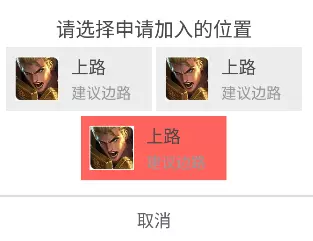
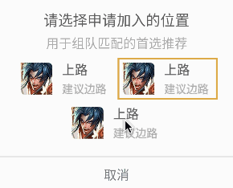

使用SpanSizeLookup接口可以基于RecyclerView实现居中效果的GridView。本文介绍了具体做法。
居中的Grid
使用RecyclerView，很容易实现如下Grid效果：
但视觉对此不满意，认为更理想的效果应该是这样：

注意看红色区域，它是 居中 而非靠左
怎么办？很简单，我们耍点”小聪明”就能实现上述布局。”聪明”的布局如下：
1
2
3
4
5
6
7
8
9
10
11
12
13
14
15
16
17
18
19
20
21
22
23
24
25
26
27
28
29
30
31
32
33
34
35
36
| <LinearLayout xmlns:android="http://schemas.android.com/apk/res/android"
xmlns:app="http://schemas.android.com/apk/res-auto"
xmlns:tools="http://schemas.android.com/tools"
android:layout_width="match_parent"
android:layout_height="wrap_content"
android:gravity="center_horizontal"
android:orientation="vertical">
<android.support.v7.widget.RecyclerView
android:id="@+id/rv_roles"
android:layout_width="match_parent"
android:layout_height="wrap_content"
android:clipToPadding="false"
android:padding="2dp"
android:scrollbarStyle="outsideOverlay"
android:scrollbars="vertical"
android:transitionGroup="false"
app:layoutManager="android.support.v7.widget.GridLayoutManager"
app:spanCount="2"
tools:ignore="UnusedAttribute"/>
<LinearLayout
android:layout_width="match_parent"
android:layout_height="wrap_content"
android:gravity="center"
android:orientation="horizontal">
<include
android:id="@+id/rl_role"
layout="@layout/tc_dialog_confirm_select_role_item"
android:layout_width="wrap_content"
android:layout_height="wrap_content"
android:visibility="gone"/>
</LinearLayout>
</LinearLayout>
|
<RecyclerView>后跟着一个<LinearLayout>，其中包含着一个跟RecyclerView中item完全一样的布局。它其实是个”假”item，不妨称之为tail。
假设RecyclerView上待显示的数据为itemList，itemList的大小为n，对tail进行如下处理：
- 当n为奇数时，RecyclerView中仅加载itemList中前
n - 1个数据；显示tail并加载itemList中最后一条数据
- 当n为偶数时，RecyclerView中加载itemList中全部数据；隐藏
tail
支持选中态
需求发生变化了。在视觉要求Grid中最后一个item居中的基础上， 交互要求Grid中的item支持选中状态，如下图：
问题来了：原来耍小聪明的方案变得不很适用了，因为在RecyclerView和tail之间保持选中态的不好同步，写代码比较麻烦
从这里找到了一个优雅的解决方案，利用SpanSizeLookup()接口调整item占用的列数以实现居中效果：
1
2
3
4
5
6
7
8
9
10
11
12
13
14
| GridLayoutManager layoutManager = new GridLayoutManager(mContext, 2);
layoutManager.setOrientation(LinearLayoutManager.VERTICAL);
layoutManager.setSpanSizeLookup(new GridLayoutManager.SpanSizeLookup() {
@Override
public int getSpanSize(int position) {
if (position % 2 == 0 && position == mSelectRoleAdapter.getItemCount() - 1) {
return 2;
} else {
return 1;
}
}
});
rv.setLayoutManager(layoutManager);
|
这个方案只是调整GridLayoutManager，并不需要额外的”假”item，自然也就不存在选中状态同步的问题，代码写起来方便不易出错。截图如下：
上图跟我们期望的效果还有点差距，但已经解决了居中的关键问题。
我们微调一下item的布局代码即可实现最终效果。微调布局的两个关键点：
- 将item背景图设置在
rl_real_root上，而非rl_fake_root
- 将
rl_real_root的width设置为wrap_content，
- 将
rl_fake_root的width设置为match_parent
1
2
3
4
5
6
7
8
9
10
11
12
13
14
15
16
17
18
19
20
21
22
23
24
25
26
27
28
29
30
31
32
33
34
35
36
37
38
39
40
41
42
43
44
45
46
47
48
49
50
51
52
53
54
55
56
57
58
| <RelativeLayout xmlns:android="http://schemas.android.com/apk/res/android"
android:id="@+id/rl_fake_root"
xmlns:tools="http://schemas.android.com/tools"
android:layout_width="match_parent"
android:layout_height="wrap_content"
android:background="@color/transparent"
tools:ignore="UnusedAttribute">
<RelativeLayout
android:id="@+id/rl_real_root"
android:layout_width="wrap_content"
android:layout_height="wrap_content"
android:layout_centerInParent="true"
android:background="@color/b_G7">
<ImageView
android:layout_marginLeft="5dp"
android:layout_marginStart="5dp"
android:layout_marginTop="5dp"
android:layout_marginBottom="5dp"
android:id="@+id/iv_role_head"
android:layout_width="36dp"
android:layout_height="36dp"
android:layout_centerVertical="true"
android:src="@drawable/tc_user_icon_circle_default" />
<LinearLayout
android:layout_width="wrap_content"
android:layout_height="wrap_content"
android:layout_centerVertical="true"
android:layout_marginEnd="10dp"
android:layout_marginLeft="10dp"
android:layout_marginRight="10dp"
android:layout_marginStart="10dp"
android:layout_toEndOf="@id/iv_role_head"
android:layout_toRightOf="@id/iv_role_head"
android:orientation="vertical">
<TextView
android:id="@+id/tv_role_name"
android:layout_width="wrap_content"
android:layout_height="wrap_content"
android:text="肉盾"
android:textColor="@color/t_G1"
android:textSize="@dimen/campus_textsize_m" />
<TextView
android:id="@+id/tv_role_desc"
android:layout_width="wrap_content"
android:layout_height="wrap_content"
android:layout_marginTop="3dp"
android:text="建议边路"
android:textColor="@color/t_G2"
android:textSize="@dimen/campus_textsize_s" />
</LinearLayout>
</RelativeLayout>
</RelativeLayout>
|
给张最后的效果图：
